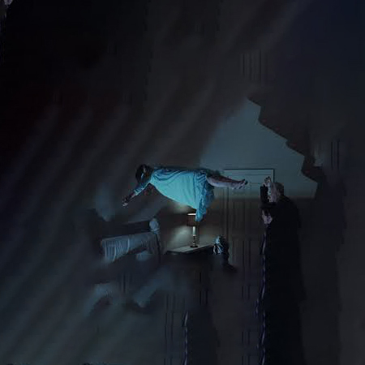

new window 1
I cried
I was born
I was sick
I saw ash
I recovered
I couldn't recall it
I dreamt of ghosts
I shook
I was a hotel
I was a moving picture
I did not ask for it
I was born
new window 2
as soon as
new window 2
because
new window 2
and still,
lightness
